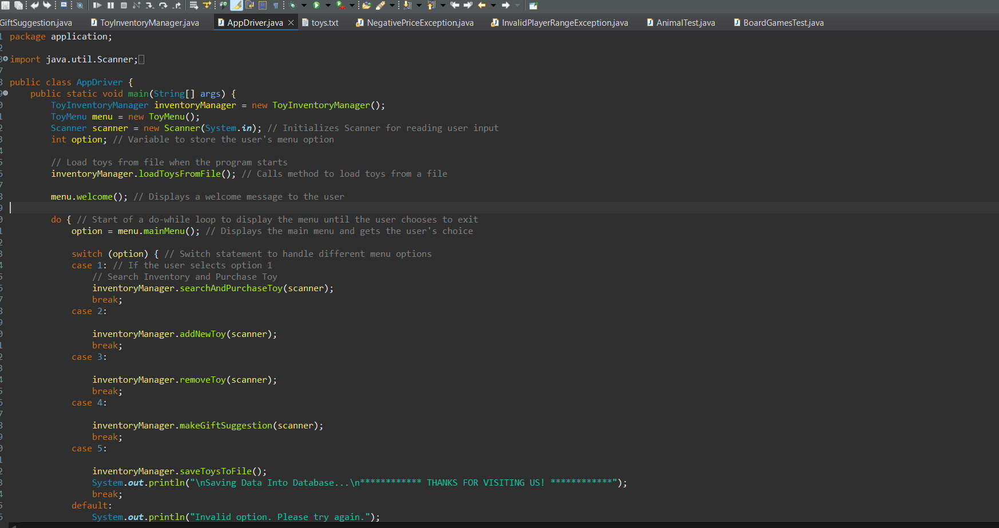
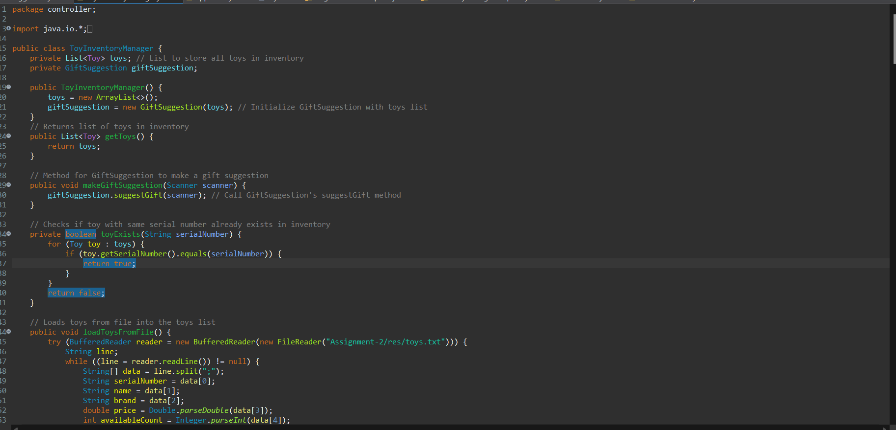
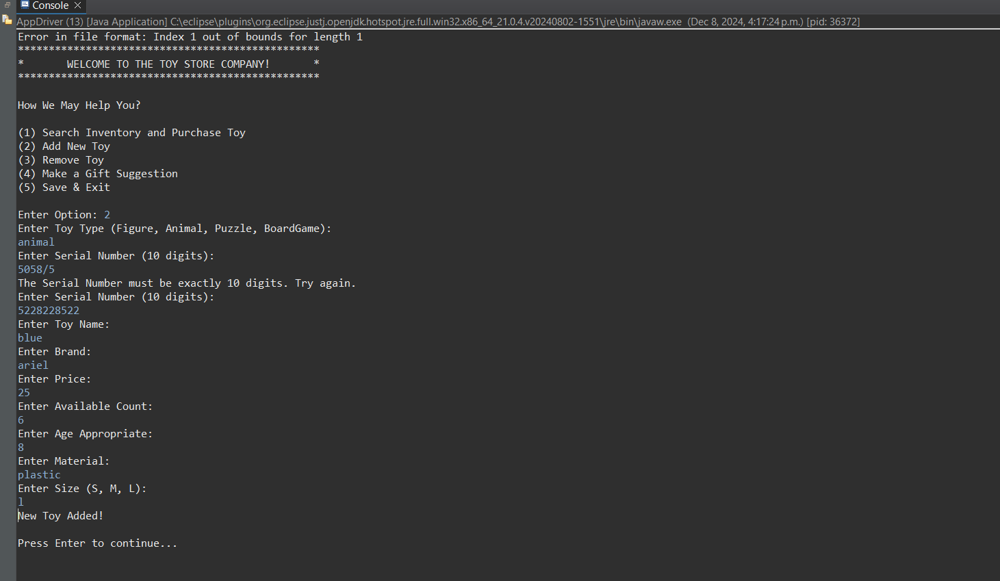

Project Overview
This project involved creating a Toy Inventory Management System using Java. The application allows users to manage a list of toys, including adding, removing, and purchasing toys, as well as making gift suggestions based on user input.
 Data Structures Used
The primary data structure used in this project is a List (specifically, an ArrayList) to store the inventory of toys. Each toy is represented as an object of the Toy class or its subclasses (Figures, Animal, Puzzles, and BoardGames). This allows for polymorphism and easy management of different toy types.
Additionally, the application uses a Scanner object for user input and file handling classes like BufferedReader and BufferedWriter for reading from and writing to files.
Challenges Faced
One of the main challenges I faced was ensuring that the application could handle various user inputs gracefully. To overcome this, I implemented input validation throughout the code, checking for valid serial numbers, toy types, and price values. This helped prevent runtime errors and ensured a smooth user experience.
Another challenge was managing the file I/O operations. I had to ensure that the data was correctly formatted in the text file and that the application could read and write data without errors. I addressed this by implementing exception handling to catch and manage potential I/O issues.
Workflow and Competence
My workflow for this project was systematic and organized. I began by outlining the requirements and functionalities of the application. I then designed the class structure, focusing on the Toy class and its subclasses to encapsulate the properties and behaviors of different toy types.
After implementing the core functionalities, I conducted thorough testing to ensure that all features worked as intended. I also sought feedback from peers to identify any areas for improvement. The final product was a robust application that successfully managed toy inventory and provided a user-friendly interface.
Code Snippet
package application;
import java.util.Scanner;
import controller.ToyInventoryManager;
import view.ToyMenu;
public class AppDriver {
public static void main(String[] args) {
ToyInventoryManager inventoryManager = new ToyInventoryManager();
ToyMenu menu = new ToyMenu();
Scanner scanner = new Scanner(System.in);
int option;
inventoryManager.loadToysFromFile();
menu.welcome();
do {
option = menu.mainMenu();
switch (option) {
case 1:
inventoryManager.searchAndPurchaseToy(scanner);
break;
case 2:
inventoryManager.addNewToy(scanner);
break;
case 3:
inventoryManager.removeToy(scanner);
break;
case 4:
inventoryManager.makeGiftSuggestion(scanner);
break;
case 5:
inventoryManager.saveToysToFile();
System.out.println("\nSaving Data Into Database...\n************ THANKS FOR VISITING US! ************");
break;
default:
System.out.println("Invalid option. Please try again.");
}
if (option != 5) {
System.out.println("\nPress Enter to continue...");
scanner.nextLine();
scanner.nextLine();
}
} while (option != 5);
scanner.close();
}
}
Results
Here is the ouptut from the project:
